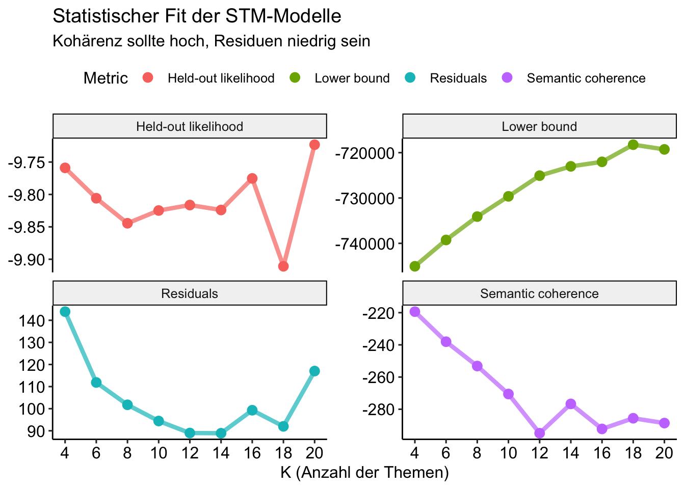
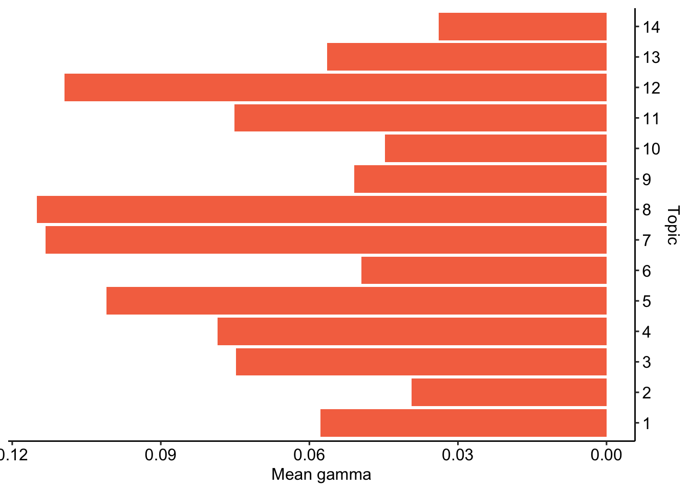
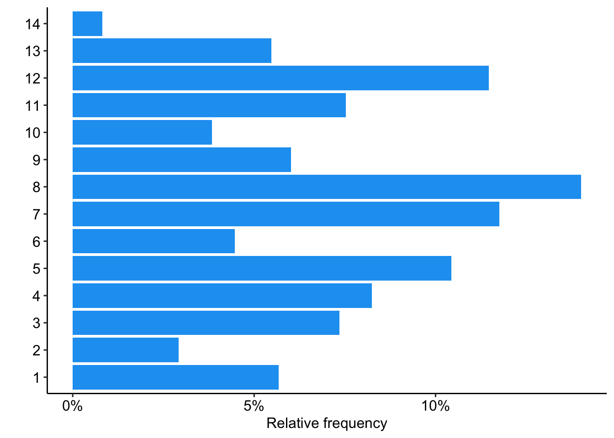

if (!require("pacman")) install.packages("pacman")
pacman::p_load(
here,
magrittr, janitor,
ggpubr,
gt, gtExtras,
countdown,
quanteda, # quanteda text processing
quanteda.textplots, quanteda.textstats, quanteda.textmodels,
tidytext,
udpipe, spacyr, # POS tagging
stm, stminsights,
easystats, tidyverse
)🔨 Topic Modeling in R
Tutorial - Session 09
Background
Preparation
# Import base data
chats <- qs::qread(here("local_data/chat-debates_full.qs"))$correct
# Import corpora
chats_spacyr <- qs::qread(here("local_data/chat-corpus_spacyr.qs"))
stm_search <- qs::qread(here("local_data/stm-majority_report-search.qs"))
stm_results <- qs::qread(here("local_data/stm-majority_report-results.qs"))Codechunks aus der Sitzung
Vorverarbeitung der Daten
chats_valid <- chats %>%
mutate(
across(c(debate, platform), ~as.factor(.x))
) Vorverarbeitung des Korpus
# spacyr-Korpus zu Tokens
chat_spacyr_toks <- chats_spacyr %>%
as.tokens(
use_lemma = TRUE
) %>%
tokens(
remove_punct = TRUE,
remove_symbols = TRUE,
remove_numbers = FALSE,
remove_url = FALSE,
split_hyphens = FALSE,
split_tags = FALSE,
) %>%
tokens_remove(
pattern = stopwords("en")
) %>%
tokens_ngrams(n = 1:3) Add docvars
# Get document names from the original data
original_docnames <- chats$message_id
# Get document names from the tokens object
token_docnames <- docnames(chat_spacyr_toks)
# Identify missing documents
missing_docs <- setdiff(original_docnames, token_docnames)
# Exclude "empty" messages
chats_filtered <- chats_valid %>%
filter(!message_id %in% missing_docs)
# Add docvars
docvars(chat_spacyr_toks) <- chats_filteredFokus on The Majority Report
# Subset tokens based on docvars
majority_report_chat_toks <- tokens_subset(
chat_spacyr_toks, streamer == "the_majority_report")# Convert to DFM
majority_report_chat_dfm <- majority_report_chat_toks %>%
dfm()
# Pruning
majority_report_chat_trim <- majority_report_chat_dfm %>%
dfm_trim(
min_docfreq = 50/nrow(chats),
max_docfreq = 0.99,
docfreq_type = "prop"
)
# Convert for stm topic modeling
majority_report_chat_stm <- majority_report_chat_trim %>%
convert(to = "stm")Estimate models
# Define parameters
future::plan(future::multisession()) # use multiple sessions
topic_range <- seq(from = 4, to = 20, by = 2)
# Initiate notifications & time tracking
tictoc::tic("STM chats - Majority Report")
# Estimate models
stm_search <- tibble(k = topic_range) %>%
mutate(
mdl = furrr::future_map(
k,
~stm::stm(
documents = majority_report_chat_stm$documents,
vocab = majority_report_chat_stm$vocab,
prevalence =~ platform + debate + message_during_debate,
K = .,
seed = 42,
max.em.its = 1000,
data = majority_report_chat_stm$meta,
init.type = "Spectral",
verbose = TRUE),
.options = furrr::furrr_options(seed = 42)
)
)
# Sent status update and finish time tracking
tictoc::toc(log = TRUE)# Create heldout
heldout <- make.heldout(
majority_report_chat_stm$documents,
majority_report_chat_stm$vocab,
seed = 42)
# Create model diagnostics
stm_results <- stm_search %>%
mutate(
exclusivity = map(mdl, exclusivity),
semantic_coherence = map(mdl, semanticCoherence, majority_report_chat_stm$documents),
eval_heldout = map(mdl, eval.heldout, heldout$missing),
residual = map(mdl, checkResiduals, majority_report_chat_stm$documents),
bound = map_dbl(mdl, function(x) max(x$convergence$bound)),
lfact = map_dbl(mdl, function(x) lfactorial(x$settings$dim$K)),
lbound = bound + lfact,
iterations = map_dbl(mdl, function(x) length(x$convergence$bound))
)Vergleich des statistischen Fits
stm_results %>%
transmute(
k,
`Lower bound` = lbound,
Residuals = map_dbl(residual, "dispersion"),
`Semantic coherence` = map_dbl(semantic_coherence, mean),
`Held-out likelihood` = map_dbl(eval_heldout, "expected.heldout")) %>%
gather(Metric, Value, -k) %>%
ggplot(aes(k, Value, color = Metric)) +
geom_line(size = 1.5, alpha = 0.7, show.legend = FALSE) +
geom_point(size = 3) +
scale_x_continuous(breaks = seq(from = 4, to = 20, by = 2)) +
facet_wrap(~Metric, scales = "free_y") +
labs(x = "K (Anzahl der Themen)",
y = NULL,
title = "Statistischer Fit der STM-Modelle",
subtitle = "Kohärenz sollte hoch, Residuen niedrig sein"
) +
theme_pubr()
Hohe Kohärenz bei hoher Exklusivität
# Models for comparison
models_for_comparison = c(12, 14, 18)
# Create figures
fig_excl <- stm_results %>%
# Edit data
select(k, exclusivity, semantic_coherence) %>%
filter(k %in% models_for_comparison) %>%
unnest(cols = c(exclusivity, semantic_coherence)) %>%
mutate(k = as.factor(k)) %>%
# Build graph
ggplot(aes(semantic_coherence, exclusivity, color = k)) +
geom_point(size = 2, alpha = 0.7) +
labs(
x = "Semantic coherence",
y = "Exclusivity"
# title = "Comparing exclusivity and semantic coherence",
# subtitle = "Models with fewer topics have higher semantic coherence for more topics, but lower exclusivity"
) +
theme_pubr()
# Create plotly
fig_excl %>% plotly::ggplotly()Extraktion der Beta- & Gamma-Matrix
# Define model
tpm_k14 <- stm_results %>%
filter(k == 14) |>
pull(mdl) %>% .[[1]]
# Beta matrix
tpm_k14 %>%
tidy(., matrix = "frex") # A tibble: 154,490 × 2
topic term
<int> <chr>
1 1 look_like
2 1 look_like_go
3 1 like_go
4 1 hahahahahahaha
5 1 look_like_s
6 1 think_go
7 1 check_moderator
8 1 fact_check_moderator
9 1 moderator_fact
10 1 moderator_fact_check
# ℹ 154,480 more rows# Gamma matrix
tpm_k14 %>%
tidy(.,matrix = "gamma",
document_names = names(majority_report_chat_stm$documents)
) # A tibble: 322,840 × 3
document topic gamma
<chr> <int> <dbl>
1 ChwKGkNJR2poT3pVdVlnREZha1FyUVlkblNrWS1B 1 0.0261
2 ChwKGkNLbXd3LXpVdVlnREZWd0wxZ0FkYW9FSWdB 1 0.0265
3 ChwKGkNKR1RsdV9VdVlnREZkNFhyUVlkZ2d3Tk5n 1 0.0123
4 ChwKGkNOQ3kxUExVdVlnREZVS1k1UWNkQ0t3Mlhn 1 0.0200
5 ChwKGkNPcW5fZkxVdVlnREZlSFJsQWtkbThZaUtR 1 0.0232
6 ChwKGkNNUHZzdlhVdVlnREZha1FyUVlkblNrWS1B 1 0.0236
7 ChwKGkNLT1JuX2pVdVlnREZZX0FsQWtkcEw4Wmd3 1 0.434
8 ChwKGkNLRElvZmpVdVlnREZaWExGZ2tkTy1ZSXVR 1 0.0118
9 ChwKGkNNblNqZm5VdVlnREZhX0l3Z1FkZUg0bHZn 1 0.0356
10 ChwKGkNMeUkyUHZVdVlnREZXQUhyUVlkTUJvZ193 1 0.00307
# ℹ 322,830 more rowsExtraktion der Top Features nach Thema
# Create gamma data
top_gamma_k14 <- tpm_k14 %>%
tidy(matrix = "gamma") %>%
dplyr::group_by(topic) %>%
dplyr::summarise(
gamma = mean(gamma),
.groups = "drop") %>%
dplyr::arrange(desc(gamma))
# Create beta data
top_beta_k14 <- tpm_k14 %>%
tidytext::tidy(.) %>%
dplyr::group_by(topic) %>%
dplyr::arrange(-beta) %>%
dplyr::top_n(7, wt = beta) %>%
dplyr::select(topic, term) %>%
dplyr::summarise(
terms_beta = toString(term),
.groups = "drop")
# Merge gamma & beta data
top_topics_terms_k14 <- top_beta_k14 %>%
dplyr::left_join(
top_gamma_k14,
by = "topic") %>%
dplyr::mutate(
topic = paste0("Topic ", topic),
topic = reorder(topic, gamma)
)
# Create output
top_topics_terms_k14 %>%
mutate(across(gamma, ~round(.,3))) %>%
dplyr::arrange(-gamma) %>%
gt() %>%
gtExtras::gt_theme_538() %>%
gt::tab_options(
table.width = gt::pct(100),
table.font.size = "12px"
)| topic | terms_beta | gamma |
|---|---|---|
| Topic 8 | make, 's, lul, emma, fuchsia, liar, kekl | 0.115 |
| Topic 7 | good, right, now, yes, plan, lie, bad | 0.113 |
| Topic 12 | kamala, want, biden, eat, take, vote, god | 0.109 |
| Topic 5 | get, s, wow, mad, omg, thank, nice | 0.101 |
| Topic 4 | lmao, omegalul, red, green, orange, baby, kekw | 0.079 |
| Topic 3 | time, sam, love, man, need, old, big | 0.075 |
| Topic 11 | say, oh, ..., know, look, shit, yeah | 0.075 |
| Topic 1 | go, like, fact, debate, look, check, keep | 0.058 |
| Topic 13 | trump, just, donald, lose, racist, win, can | 0.056 |
| Topic 9 | lol, one, give, ...., wtf, china, okay | 0.051 |
| Topic 6 | people, think, go, back, work, try, change | 0.050 |
| Topic 10 | let, talk, ’s, can, like, sound, see | 0.045 |
| Topic 2 | stop, start, please, israel, use, laugh, agree | 0.039 |
| Topic 14 | face, guy, don, bring, real, country, rolling_on_the_floor_laughe | 0.034 |
Extraktion & Zusammenführung der Daten
# Prepare for merging
topic_gammas_k14 <- tpm_k14 %>%
tidy(matrix = "gamma") %>%
dplyr::group_by(document) %>%
tidyr::pivot_wider(
id_cols = document,
names_from = "topic",
names_prefix = "gamma_topic_",
values_from = "gamma")
gammas_k14 <- tpm_k14 %>%
tidytext::tidy(matrix = "gamma") %>%
dplyr::group_by(document) %>%
dplyr::slice_max(gamma) %>%
dplyr::mutate(
main_topic = ifelse(
gamma > 0.5, topic, NA)) %>%
rename(
top_topic = topic,
top_gamma = gamma) %>%
ungroup() %>%
left_join(.,
topic_gammas_k14,
by = join_by(document))
# Identify empty documents
empty_docs <- Matrix::rowSums(
as(majority_report_chat_trim, "Matrix")) == 0
empty_docs_ids <- majority_report_chat_trim@docvars$docname[empty_docs]
# Merge with original data
chats_topics <- chats_filtered %>%
filter(!(message_id %in% empty_docs_ids)) %>%
filter(streamer == "the_majority_report") %>%
bind_cols(gammas_k14) %>%
select(-document)
# Preview
chats_topics %>% glimpseRows: 23,060
Columns: 50
$ streamer <chr> "the_majority_report", "the_majority_report", "t…
$ url <chr> "https://www.youtube.com/watch?v=lzobJil9Sgc", "…
$ platform <fct> youtube, youtube, youtube, youtube, youtube, you…
$ debate <fct> presidential, presidential, presidential, presid…
$ user_name <chr> "Scott Plant", "Rebecca W", "Galactic News Netwo…
$ user_id <chr> "UC4mxlnk193JrXVAp6K-vEpQ", "UCeenHJ1v62biyOyKwL…
$ user_display_name <chr> "Scott Plant", "Rebecca W", "Galactic News Netwo…
$ user_badges <list> [], [], [], [], [], [], [], [], [], [], [], [],…
$ message_timestamp <dbl> -152, -151, -145, -138, -137, -132, -126, -126, …
$ message_id <chr> "ChwKGkNJR2poT3pVdVlnREZha1FyUVlkblNrWS1B", "Chw…
$ message_type <chr> "text_message", "text_message", "text_message", …
$ message_content <chr> "Donnie will say, \"That is my own sperm.\"", "w…
$ message_emotes <list> [], [], [["UCkszU2WH9gy1mb0dV-11UJg/ssIfY7OFG5O…
$ message_length <int> 40, 45, 52, 38, 10, 32, 8, 14, 2, 90, 20, 36, 20…
$ message_timecode <Period> -2M -32S, -2M -31S, -2M -25S, -2M -18S, -2M -…
$ message_time <chr> "23:57:28", "23:57:29", "23:57:35", "23:57:42", …
$ message_during_debate <dbl> 0, 0, 0, 0, 0, 0, 0, 0, 0, 0, 0, 0, 0, 0, 0, 0, …
$ user_has_badge <dbl> 0, 0, 0, 0, 0, 0, 0, 0, 0, 0, 0, 0, 0, 0, 0, 0, …
$ user_is_premium <dbl> 0, 0, 0, 0, 0, 0, 0, 0, 0, 0, 0, 0, 0, 0, 0, 0, …
$ user_is_subscriber <dbl> 0, 0, 0, 0, 0, 0, 0, 0, 0, 0, 0, 0, 0, 0, 0, 0, …
$ user_is_turbo <dbl> 0, 0, 0, 0, 0, 0, 0, 0, 0, 0, 0, 0, 0, 0, 0, 0, …
$ user_is_moderator <dbl> 0, 0, 0, 0, 0, 0, 0, 0, 0, 0, 0, 0, 0, 0, 0, 0, …
$ user_is_partner <dbl> 0, 0, 0, 0, 0, 0, 0, 0, 0, 0, 0, 0, 0, 0, 0, 0, …
$ user_is_subgifter <dbl> 0, 0, 0, 0, 0, 0, 0, 0, 0, 0, 0, 0, 0, 0, 0, 0, …
$ user_is_broadcaster <dbl> 0, 0, 0, 0, 0, 0, 0, 0, 0, 0, 0, 0, 0, 0, 0, 0, …
$ user_is_vip <dbl> 0, 0, 0, 0, 0, 0, 0, 0, 0, 0, 0, 0, 0, 0, 0, 0, …
$ user_is_twitchdj <dbl> 0, 0, 0, 0, 0, 0, 0, 0, 0, 0, 0, 0, 0, 0, 0, 0, …
$ user_is_founder <dbl> 0, 0, 0, 0, 0, 0, 0, 0, 0, 0, 0, 0, 0, 0, 0, 0, …
$ user_is_staff <dbl> 0, 0, 0, 0, 0, 0, 0, 0, 0, 0, 0, 0, 0, 0, 0, 0, …
$ user_is_game_dev <dbl> 0, 0, 0, 0, 0, 0, 0, 0, 0, 0, 0, 0, 0, 0, 0, 0, …
$ user_is_ambassador <dbl> 0, 0, 0, 0, 0, 0, 0, 0, 0, 0, 0, 0, 0, 0, 0, 0, …
$ user_no_audio <dbl> 0, 0, 0, 0, 0, 0, 0, 0, 0, 0, 0, 0, 0, 0, 0, 0, …
$ user_no_video <dbl> 0, 0, 0, 0, 0, 0, 0, 0, 0, 0, 0, 0, 0, 0, 0, 0, …
$ top_topic <int> 11, 7, 4, 3, 4, 3, 1, 4, 9, 4, 8, 3, 1, 1, 3, 13…
$ top_gamma <dbl> 0.4435422, 0.3412468, 0.7627751, 0.5663056, 0.46…
$ main_topic <int> NA, NA, 4, 3, NA, NA, NA, 4, NA, 4, NA, NA, NA, …
$ gamma_topic_1 <dbl> 0.026098022, 0.026450828, 0.012260893, 0.0200424…
$ gamma_topic_2 <dbl> 0.014058480, 0.016014175, 0.006519458, 0.1322111…
$ gamma_topic_3 <dbl> 0.043655546, 0.066001729, 0.018185091, 0.5663056…
$ gamma_topic_4 <dbl> 0.03876696, 0.14976529, 0.76277514, 0.03011074, …
$ gamma_topic_5 <dbl> 0.186801763, 0.043801244, 0.020095565, 0.0373451…
$ gamma_topic_6 <dbl> 0.021470740, 0.024622665, 0.009041711, 0.0174135…
$ gamma_topic_7 <dbl> 0.036282513, 0.341246826, 0.017882159, 0.0289225…
$ gamma_topic_8 <dbl> 0.04538521, 0.14311198, 0.06168206, 0.03558740, …
$ gamma_topic_9 <dbl> 0.021910232, 0.023552979, 0.012143933, 0.0165138…
$ gamma_topic_10 <dbl> 0.020656194, 0.020843309, 0.013562820, 0.0161670…
$ gamma_topic_11 <dbl> 0.443542243, 0.027314995, 0.019249172, 0.0206369…
$ gamma_topic_12 <dbl> 0.044397591, 0.044680183, 0.019709728, 0.0343713…
$ gamma_topic_13 <dbl> 0.027631227, 0.037326873, 0.011473224, 0.0214522…
$ gamma_topic_14 <dbl> 0.029343282, 0.035266919, 0.015419046, 0.0229199…Themen im Fokus
Top Topic
chats_topics %>%
filter(top_topic == 8) %>%
arrange(-top_gamma) %>%
slice_head(n = 10) %>%
select(message_id, user_name, message_time, message_content, top_gamma, top_topic) %>%
gt() %>%
gtExtras::gt_theme_538() %>%
gt::tab_options(table.font.size = "10px")| message_id | user_name | message_time | message_content | top_gamma | top_topic |
|---|---|---|---|---|---|
| ChwKGkNKdlRqY1BwdVlnREZRREV3Z1FkV2I4U1hn | David Davis | 01:29:52 | :watermelon: :watermelon: :watermelon: :watermelon: :watermelon: :watermelon: :watermelon: :watermelon: :watermelon: :watermelon: :watermelon: :watermelon: :watermelon: :watermelon: :watermelon: :watermelon: | 0.9628609 | 8 |
| ChwKGkNLMlp3cUxzdVlnREZVN0NsQWtkT0JBRTN3 | Jules Winnfeild 🏳️⚧️ | 01:42:09 | :face-fuchsia-poop-shape::face-fuchsia-poop-shape::face-fuchsia-poop-shape::face-fuchsia-poop-shape::face-fuchsia-poop-shape::face-fuchsia-poop-shape::face-fuchsia-poop-shape: | 0.9583042 | 8 |
| ChwKGkNNclk0dFBZdVlnREZZYWg1UWNkUlhvNVB3 | CanalEduge | 00:14:24 | :face-fuchsia-poop-shape::face-fuchsia-poop-shape::face-fuchsia-poop-shape::face-fuchsia-poop-shape::face-fuchsia-poop-shape: | 0.9437816 | 8 |
| ChwKGkNJaVdpNVBmdVlnREZTV1Q1UWNkUWg0dEJn | Jules Winnfeild 🏳️⚧️ | 00:43:27 | :face-fuchsia-poop-shape::face-fuchsia-poop-shape::face-fuchsia-poop-shape::face-fuchsia-poop-shape: | 0.9315330 | 8 |
| ChwKGkNORG1uTWpvdVlnREZkd3VyUVlkSVFrVU5R | #BobbleHead | 01:25:34 | WORLDSTAR own's the Trademark on the Algorithm that identified all the Pedophiles = Blame T.M.Z. #ReleaseTheBlackBaby | 0.9313871 | 8 |
| ChwKGkNPV09fYmJwdVlnREZXc3ByUVlkbk9Vc3d3 | David Davis | 01:29:26 | :watermelon: :watermelon: :watermelon: :watermelon: :watermelon: :watermelon: :watermelon: :watermelon: | 0.9303014 | 8 |
| ChwKGkNMV244NkRvdVlnREZUMFRyUVlkYmZzUmpB | #BobbleHead | 01:24:12 | WORLDSTAR own's the Trademark on the Algorithm that identified all the Pedophiles = Blame T.M.Z. | 0.9287878 | 8 |
| ChwKGkNLN0N4ZTdldVlnREZWNDZyUVlkRmZJRklR | Corporations8MyBaby | 00:42:10 | :face-fuchsia-tongue-out::face-fuchsia-tongue-out::face-fuchsia-tongue-out::face-fuchsia-tongue-out: | 0.9269656 | 8 |
| 9c014ab4-89a7-4f9d-97c8-be3da2868f58 | nightbot | 00:10:47 | Join the official Majority Report discord community! https://discord.gg/majority | 0.9215614 | 8 |
| fcb53a8b-4b75-4557-b3eb-d273b7069d88 | nightbot | 00:26:14 | Join the official Majority Report discord community! https://discord.gg/majority | 0.9215614 | 8 |
Thema 12
chats_topics %>%
filter(top_topic == 12) %>%
arrange(-top_gamma) %>%
slice_head(n = 10) %>%
select(message_id, user_name, message_time, message_content, top_gamma, top_topic) %>%
gt() %>%
gtExtras::gt_theme_538() %>%
gt::tab_options(table.font.size = "10px")| message_id | user_name | message_time | message_content | top_gamma | top_topic |
|---|---|---|---|---|---|
| ChwKGkNNZXg5LUxxdVlnREZkcVc1UWNkeGpNTDJB | SamSedersLeftTeste | 01:35:27 | The vice president is BLACK BLACK BLACK BLACK BLACK BLACK | 0.9227423 | 12 |
| ChwKGkNNdVU0NTNndVlnREZkNEwxZ0FkbWxFSFN3 | Rilly Kewl | 00:48:18 | Hey Hey Hey Hey SHUT UP:red_exclamation_mark: | 0.9121621 | 12 |
| ChwKGkNJU1BtS0RndVlnREZRREV3Z1FkV2I4U1hn | Rilly Kewl | 00:48:23 | Hey Hey Hey Hey SHUT UP:red_exclamation_mark: | 0.9121621 | 12 |
| ChwKGkNJS1NvcVRndVlnREZRMHUxZ0FkU1FFSzZB | Rilly Kewl | 00:48:31 | Hey Hey Hey Hey SHUT UP:red_exclamation_mark: | 0.9121621 | 12 |
| ChwKGkNLSG9uYUxodVlnREZhY0cxZ0FkSVJjSGdB | Rilly Kewl | 00:52:56 | Hey Hey Hey Hey SHUT UP:red_exclamation_mark: | 0.9121621 | 12 |
| ChwKGkNPbU90YV9odVlnREZWZ3FyUVlkaUpnNUpn | Rilly Kewl | 00:53:23 | Hey Hey Hey Hey SHUT UP:red_exclamation_mark: | 0.9121621 | 12 |
| ChwKGkNLYmxuZjdzdVlnREZiMHUxZ0FkT0owN0h3 | Rilly Kewl | 01:45:21 | Hey Hey Hey Hey SHUT UP:red_exclamation_mark: | 0.9121621 | 12 |
| ChwKGkNLX3F4cl90dVlnREZWbzAxZ0FkdzVFTTR3 | Rilly Kewl | 01:47:38 | Hey Hey Hey Hey SHUT UP:red_exclamation_mark: | 0.9121621 | 12 |
| ChwKGkNOYm1yTVB0dVlnREZWb0gxZ0FkQnF3QWRR | Rilly Kewl | 01:47:46 | Hey Hey Hey Hey SHUT UP:red_exclamation_mark: | 0.9121621 | 12 |
| bad4de96-6c3f-4495-9bd5-da395d9af90b | grandshadowfox | 01:07:37 | Grandshadowfox subscribed with Prime. They've subscribed for 16 months! 15 months | 0.9064436 | 12 |
Thema 4
chats_topics %>%
filter(top_topic == 4) %>%
arrange(-top_gamma) %>%
slice_head(n = 10) %>%
select(message_id, user_name, message_time, message_content, top_gamma, top_topic) %>%
gt() %>%
gtExtras::gt_theme_538() %>%
gt::tab_options(table.font.size = "10px")| message_id | user_name | message_time | message_content | top_gamma | top_topic |
|---|---|---|---|---|---|
| ChwKGkNLX3Z3SzdkdVlnREZhb0NyUVlkVER3aVRn | rhys | 00:35:28 | :text-green-game-over::text-green-game-over::text-green-game-over::text-green-game-over::text-green-game-over::text-green-game-over: | 0.9687024 | 4 |
| ChwKGkNJN1hsSXJudVlnREZWTGNGZ2tkYnFnYmJB | Jules Winnfeild 🏳️⚧️ | 01:18:56 | :fish-orange-wide-eyes::fish-orange-wide-eyes::fish-orange-wide-eyes::fish-orange-wide-eyes::fish-orange-wide-eyes: | 0.9649579 | 4 |
| ChwKGkNJQ3ZzYTdXdVlnREZSek1GZ2tkMndnZ1Bn | fish Monger | 00:04:09 | ideas:finger-red-number-one::finger-red-number-one::finger-red-number-one::finger-red-number-one::finger-red-number-one::finger-red-number-one::finger-red-number-one::finger-red-number-one: | 0.9647715 | 4 |
| ChwKGkNNcmVxb0RmdVlnREZhb0NyUVlkVER3aVRn | rhys | 00:42:48 | :text-green-game-over::text-green-game-over::text-green-game-over::text-green-game-over::text-green-game-over: | 0.9630820 | 4 |
| 32d36382-5eaf-4da6-a2dc-c9683b98162b | nightbot | 00:01:27 | Libertarians, call into the show! 646 257-3920. Phones open after 1pm EST. Download the Majority Report app to IM into the show. Go to JoinTheMajorityReport.com to become a member and help support the show. | 0.9629138 | 4 |
| 4ffbae78-db39-40e9-bcf8-b5c0965fe2a4 | nightbot | 00:09:42 | Libertarians, call into the show! 646 257-3920. Phones open after 1pm EST. Download the Majority Report app to IM into the show. Go to JoinTheMajorityReport.com to become a member and help support the show. | 0.9629138 | 4 |
| a08570c3-f835-4568-9332-b97bf22ee61b | nightbot | 02:01:22 | Libertarians, call into the show! 646 257-3920. Phones open after 1pm EST. Download the Majority Report app to IM into the show. Go to JoinTheMajorityReport.com to become a member and help support the show. | 0.9629138 | 4 |
| 46b82320-e59d-486e-a58f-acf35b03fe4a | nightbot | 02:09:43 | Libertarians, call into the show! 646 257-3920. Phones open after 1pm EST. Download the Majority Report app to IM into the show. Go to JoinTheMajorityReport.com to become a member and help support the show. | 0.9629138 | 4 |
| 191d1514-cc7e-4a65-8c9e-0ce5d28f1a5d | nightbot | 02:22:30 | Libertarians, call into the show! 646 257-3920. Phones open after 1pm EST. Download the Majority Report app to IM into the show. Go to JoinTheMajorityReport.com to become a member and help support the show. | 0.9629138 | 4 |
| ed759097-6071-4394-b810-5adafd52f652 | nightbot | 02:35:23 | Libertarians, call into the show! 646 257-3920. Phones open after 1pm EST. Download the Majority Report app to IM into the show. Go to JoinTheMajorityReport.com to become a member and help support the show. | 0.9629138 | 4 |
User mit den meisten Beiträgen zu Thema 4
chats_topics %>%
filter(top_topic == 8) %>%
count(user_name, sort = TRUE) %>%
mutate(
prop = round(n/sum(n)*100, 2)) %>%
slice_head(n = 10) %>%
gt() %>%
gtExtras::gt_theme_538() | user_name | n | prop |
|---|---|---|
| buuuuuuuuuuuuuuuuuuuuuut | 59 | 1.83 |
| sauvignoncitizen | 50 | 1.55 |
| Say What | 49 | 1.52 |
| Jules Winnfeild 🏳️⚧️ | 47 | 1.45 |
| asiak | 46 | 1.42 |
| hardradajm | 40 | 1.24 |
| Bob Carmody | 34 | 1.05 |
| T.R. | 33 | 1.02 |
| maj_k1bbles | 31 | 0.96 |
| ogdimwit | 31 | 0.96 |
Prävalenz vs. Häufigkeit
top_gamma_k14 %>%
ggplot(aes(as.factor(topic), gamma)) +
geom_col(fill = "#F57350") +
labs(
x = "Topic",
y = "Mean gamma"
) +
coord_flip() +
scale_y_reverse() +
scale_x_discrete(position = "top") +
theme_pubr()
chats_topics %>%
mutate(across(top_topic, as.factor)) %>%
ggplot(aes(top_topic, y = after_stat(prop), group = 1)) +
geom_bar(fill = "#1DA1F2") +
scale_y_continuous(labels = scales::percent) +
labs(
x = "",
y = "Relative frequency"
) +
coord_flip() +
theme_pubr()
Einfluss von Meta-Variablen
effects <- estimateEffect(
formula =~ platform + debate + message_during_debate,
stmobj = tpm_k14,
metadata = chats_topics)summary(effects, topics = 12)
Call:
estimateEffect(formula = ~platform + debate + message_during_debate,
stmobj = tpm_k14, metadata = chats_topics)
Topic 12:
Coefficients:
Estimate Std. Error t value Pr(>|t|)
(Intercept) -0.128058 28.831457 -0.004 0.99646
platformyoutube 0.214453 28.831531 0.007 0.99407
debatevice presidential 0.203569 28.831506 0.007 0.99437
message_during_debate 0.011889 0.004316 2.755 0.00588 **
---
Signif. codes: 0 '***' 0.001 '**' 0.01 '*' 0.05 '.' 0.1 ' ' 1summary(effects, topics = 8)
Call:
estimateEffect(formula = ~platform + debate + message_during_debate,
stmobj = tpm_k14, metadata = chats_topics)
Topic 8:
Coefficients:
Estimate Std. Error t value Pr(>|t|)
(Intercept) 0.1234719 29.5028653 0.004 0.997
platformyoutube -0.0333377 29.5028958 -0.001 0.999
debatevice presidential -0.0134738 29.5028788 0.000 1.000
message_during_debate 0.0006216 0.0044960 0.138 0.890